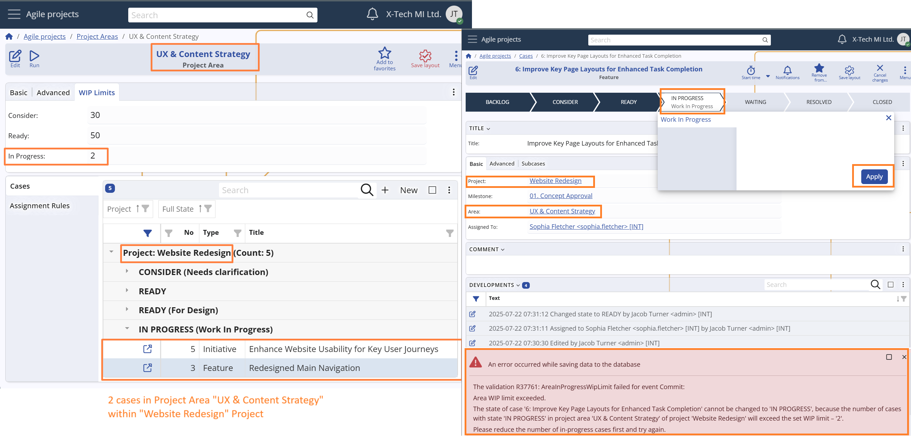

WIP (work-in-progress) limits
Work-in-Progress (WIP) limits are a key control mechanism in the Agile PM module that helps prevent excessive accumulation of active tasks in specific workflow stages.
They support balanced task distribution, reduce bottlenecks, and maintain a steady pace of execution.
WIP limit enforcement
WIP limits are automatically enforced during Case state transitions — specifically when a user attempts to move a Case into one of the following System States:
- Consider
- Ready
- In Progress
If a WIP limit is exceeded, the system will block the transition and display a clear message to the user.
WIP limit evaluation logic
The logic for determining whether a WIP limit is exceeded is as follows:
If no Project Area is assigned to the Case, or the assigned Project Area has no WIP limit for the target state:
The system checks if the Case's Project has a limit for that state.
It then counts all Cases in the same Project that are currently in the target System State.
If the count exceeds the defined limit, the transition is blocked.If the Case has a Project Area with a WIP limit for the target state:
The system counts only the Cases that belong to the same Project Area and are linked to the same Project as the Case's Project.
If this count exceeds the defined limit, the transition is blocked.
For configuration paths, see: Projects -> WIP (work-in-progress) Limits and Project Areas -> WIP (work-in-progress) Limits
